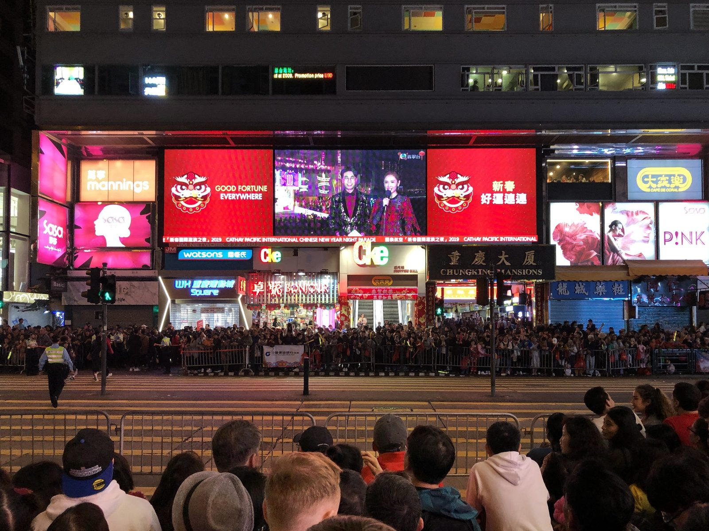
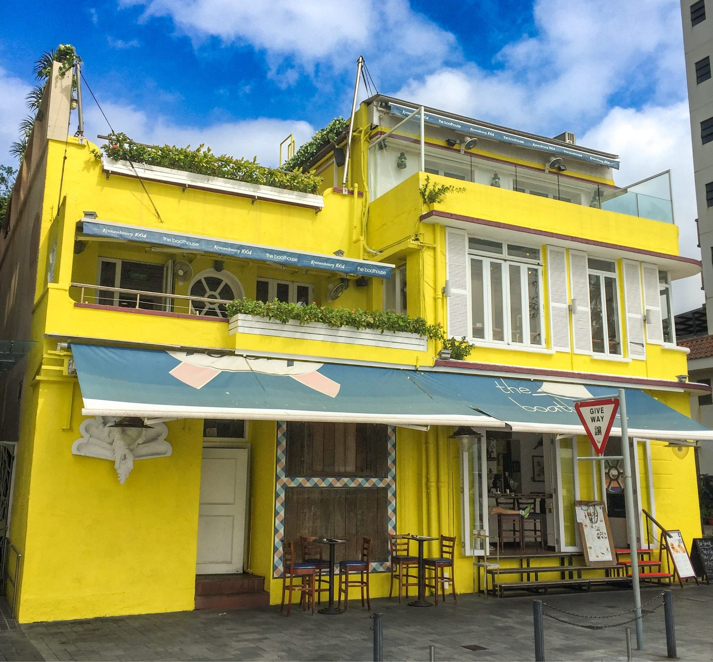

Das vierte Mal Hongkong, aber das erste Mal, zum Frühlingsfest. Das Chinesische Neujahr verwandelt die Metropole in ein einziges, buntes Feuerwerk. Und ich stehe mittendrin, vor den Chungking Mansions, des einstigen "Sündenpful" im wolhabenen Honkonger Viertels "Tsim Sha Tsui", an der Nathan Road, in dem ich vor Jahren einmal übernachtet habe. Damals war es Abenteuer. Heute weckt es schöne Erinnerungen.
Die Parade rollt vorbei. Drachen, Löwen, Trommeln, der Geruch von Pulver und gebratenem Entenfleisch. Die Nathan Road, sonst eine Schlucht aus Neon und Eile, ist heute eine Flussbettaus Menschen. Ich stehe genau da, wo ich vor all den Jahren in einem Hostelzimmer geschlafen habe, das gerade groß genug für einen Koffer war. Jetzt drücken sich Tausende an mir vorbei, und ich bin still. Man gewöhnt sich nicht an Hongkong. Man gewöhnt sich nur daran, überrascht zu werden.
Zwischen Wolkenkratzern und Wasserspiegeln
Wer Hongkong nur von der Avenue of Stars oder dem Peak kennt, kennt nur die Hülle. Die Stadt lebt in den Widersprüchen. Zwischen dem Glanz der Central-Wolkenkratzer und den engen Gassen von Mong Kok, wo Fisch auf dem Bürgersteig trocknet und alte Männer Mahjong spielen, als hätte die Zeit vor vierzig Jahren aufgehört zu zählen.
Und dann gibt es Stanley. Das gelbe Haus am Strand, unübersehbar, unverwechselbar. Ich war baden dort, im Februar, im Meer, das für hongkongische Verhältnisse kühl ist, für mich aber erfrischend. Die Sonne brennt, die Palmen rascheln, und für eine Stunde vergisst man, dass zwanzig Minuten Busfahrt entfernt eine der dichtesten Städte der Welt pulsiert. Stanley ist Hongkongs Atempause. Ein Strand, ein Markt, ein gelbes Haus, das aussieht wie ein tropisches Postkartenmotiv.
Die Kunst des Durchkommens
In Hongkong isst man nicht, um zu verweilen. Man isst, um weiterzukommen. Dim Sum in einem Restaurant, dessen Name nur aus Zahlen besteht. Nudelsuppe an einem Imbiss, wo man steht, weil es keine Stühle gibt. Ein Eierwaffel auf der Straße, heiß, knusprig, süß, während man auf die nächste Fähre wartet. Hier gibt es keine fünf-Gänge-Menüs, sondern tausend Gerichte, die jeweils fünf Minuten dauern und fünf Dollar kosten.
"Hongkong ist die einzige Stadt, in der man um drei Uhr nachts noch ein heißes Essen bekommt, schneller als anderswo ein Glas Wasser."
Warum ich immer wiederkomme
Vier Mal. Jeder Besich war anders.Jetzt hier, stehend vor den Chungking Mansions, während das Neue Jahr um mich herum explodiert. Ich liebe diese Stadt- Ihre Rhythmen, ihre Pausen, ihre Orte des Stillstands inmitten des Sturms.


Hongkong ist keine Stadt zum Verweilen. Sie ist eine Stadt zum Durchatmen, zum Durchschauen, zum Durchkommen. Und manchmal, wenn man ganz still steht – an einem Strand, oder in einer Menschenmenge an der Nathan Road – dann sieht man sie. Die Stille hinter dem Lärm.
Mein Rat? Komm mit leeren Händen. Nimm die Fähre nach Kowloon. Setz dich an den Hafen und genieße das unbeschreibliche Flair mit der Skyline von Hongkong.
Warnung: Wer einmal Hongkong im Blut hat, wird anderswo immer nach dem nächsten Imbiss suchen. Bis bald, und möge das Jahr glücklich beginnen.